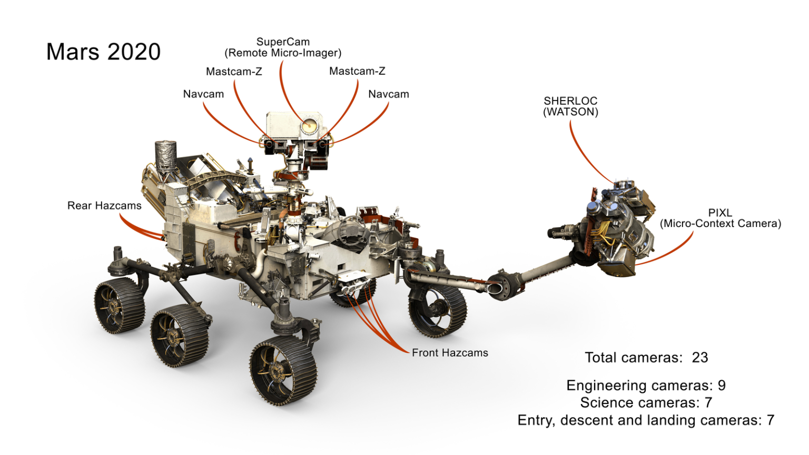

Perseverance Mission Update
Launched: July 2020 | Landed: Feb 2021
Perseverance is searching for signs of ancient microbial life. In the summer of 2024, it investigated a complex rock at "Cheyava Falls" showing signs of past water and organic material.
In September 2025, the journal Nature published validated results confirming the "Sapphire Canyon" sample contains potential biosignatures.
Source: NASA News Release